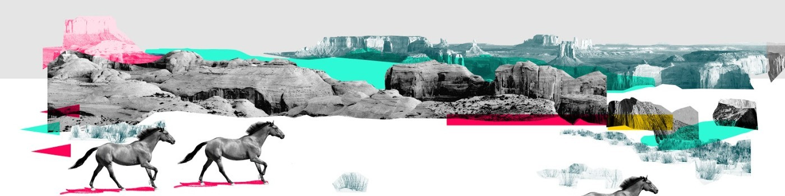

About Lulu
Lulu Jiang is an Emmy-Nominated Beijing born NYC based Multimedia Designer and Film Director, who completed an MFA in Computer Arts with a concentration in Motion Graphics from the School of Visual Arts in New York in 2016 and her BFA in Animation from Renmin University of China in 2014.
Lulu's collage work
Work Experience
- AWS
- CNN+
- NBC NEWS
Education
She received a master in fine art degree in NYC. Click on the links to learn more.